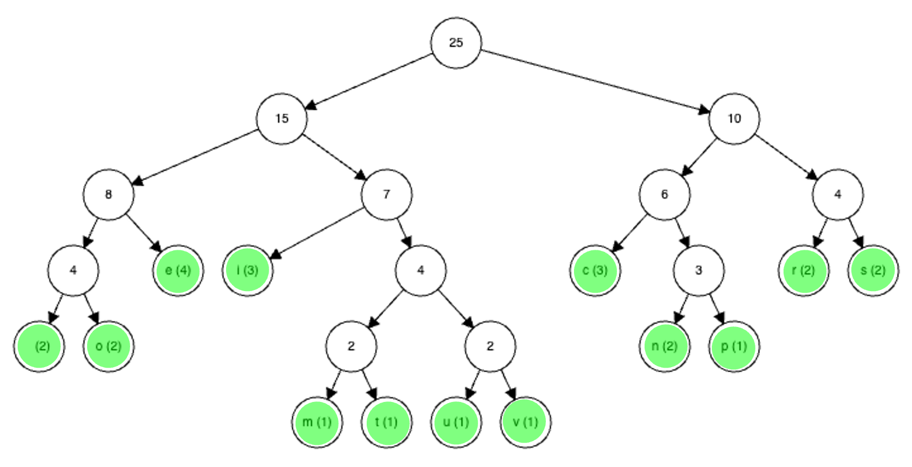

Huffman Coding is a form of lossless data compression which can be used on text files.
Huffman Coding is a form of lossless data compression which can be used on text files.
In ASCII each character is encoded by exactly 7 bits, but in Huffman Coding the length of the binary encoding of a character varies.
Let's do an example for the string "computer science revision".
In ASCII, this would be 25 × 7 = 175 bits.
The characters in the string are arranged in a Huffman tree, and are written next to their frequencies in the string.
For example, "o" appears twice, so it is written next to a 2.
Note: you do not need to be able to create a Huffman tree, but you do need to be able to read one.
Diagram 1 shows an Example Huffman tree.
 Diagram 1
Diagram 1

The characters have been highlighted in green.
The numbers in the other circles are just the combined frequencies of every character underneath that circle.
The character on the far left is a space.
To get the binary encoding of a character, we trace the path from the top to that character.
Each time we go left, we write a 0, and each time we go right, we write a 1.
So, the code for c would be 100 (because we go right once, and then left twice)
Table 1 shows every character's encoding in this Huffman tree.
 Table 1
Table 1
| Character | Encoding |
|---|---|
| Space | 0000 |
| o | 0001 |
| e | 001 |
| i | 010 |
| m | 01100 |
| t | 01101 |
| u | 01110 |
| v | 01111 |
| c | 100 |
| n | 1010 |
| p | 1011 |
| r | 110 |
| s | 111 |
Therefore, the final encoding is 100 0001 01100 1011 01110 01101 001 110 0000 111 100 010 001 1010 100 001 0000 110 001 01111 010 111 010 0001 1010.
This is 90 bits (ASCII was 175, so we almost halved the storage required).
 Decode the binary sequence
Decode the binary sequence 100 0001 110 110 001 100 01101 using Table 1.
Tap/click to reveal
"correct".